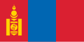
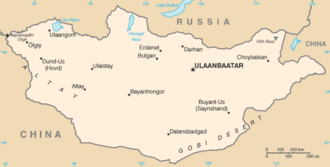

Mongolie

To know:
Capital : Oulan-Bator
Population (2018) : 3 millions
Form of the State: Semi-presidential multiparty republic
President of the Republic: Ukhnaagiin Khürelsükh
Parliament: State Great Hural
Official languages: Mongol
Cash : Turgrik
The policy of the Mongolian People's Republic, although officially retaining its independence during the Soviet period, was aligned with that of the USSR. After the end of the Cold War and the fall of communism in Mongolia in 1990, the country adopted a democratic constitution in 1992.
Its territory is immense, but has very little arable land, the country being mountainous and covered with steppes whose aridity increases as it goes south. Nearly 28% of the 3 million inhabitants are nomadic or semi-nomadic. The majority of citizens (80 per cent) are of Mongolian origin. There are, however, Turkic-speaking minorities, such as Kazakhs and Tuvans, especially in the west of the country. Nearly a third of the inhabitants live in Ulaanbaatar.
Religion
Tibetan Buddhism, which appeared in the thirteenth century, became the state religion of the Mongol Empire in the sixteenth century after the visit of the 3rd Dalai Lama, Sonam Gyatso. It eclipsed shamanism, which was then the subject of a campaign of quasi-eradication. Under the guise of modernization, Buddhism suffered the wrath of an atheist regime close to Joseph Stalin in the 1930s. Although it is no longer the state religion, Tibetan Buddhism remains the religion of more than half of Mongolians today, while shamanism has returned to favour since the 1990s.
forbidden from Mongolian culture
Lean against or pass between the yurt posts. This custom undoubtedly has very practical origins, but also expresses the symbolism of the poles as a source of strength in the house.
Walking on the threshold. It is considered a bad omen to walk or stumble on the threshold of the yurt when entering. People traveling to Mongolia in the Middle Ages reported that anyone who walked on the threshold of the Khan's palace was put to death.
Mixing dirty and clean stuff. Mongolians have a high regard for cleanliness, and they believe that allowing dirty objects to touch clean objects will contaminate clean objects. Thus, in accordance with this custom, it is unacceptable, for example, to place dirty clothes in the family trunk.
Walking or sitting north of someone older than you. Although the Mongols adhere less rigidly to Confucian values than other Asian peoples, the elders are traditionally accorded considerable respect. The oldest and most respected visitors sit in the back of the yurt, and the others sit next to them in descending order of age.
Pass between the fire and the back of the ger. The fire and the back of the house are the two most sacred parts of the yurt; Nomads believe that a line of energy passes between these two points, and it must not be broken. All visitors must therefore enter and exit on the same side.
Extend your arms to touch both sides of the doorframe. The cross in front of the door of the house is traditionally a symbol indicating that a death has occurred and that visitors should keep their distance. Touching both sides of the jamb while extending one's arms is therefore considered a bad omen.
Putting waste in the fire. Fire being considered the purest of elements, no waste should be thrown into it.
Walk counterclockwise. The "nar zuv", literally "the direction of the sun's rotation", refers in Mongolia to the clockwise direction. Mongolians believe that everything in the universe belongs to the cycles of time and motion, and it is important to move in harmony with these cycles. So when you fold down the roof of the house, for example, you have to walk in the yurt clockwise.
Bringing weapons into the home. Before entering the house, the visitor must remove his knife from his belt and hang it in plain sight, thus indicating his friendly intentions.
.jpg)